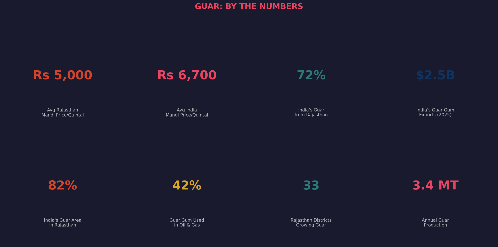
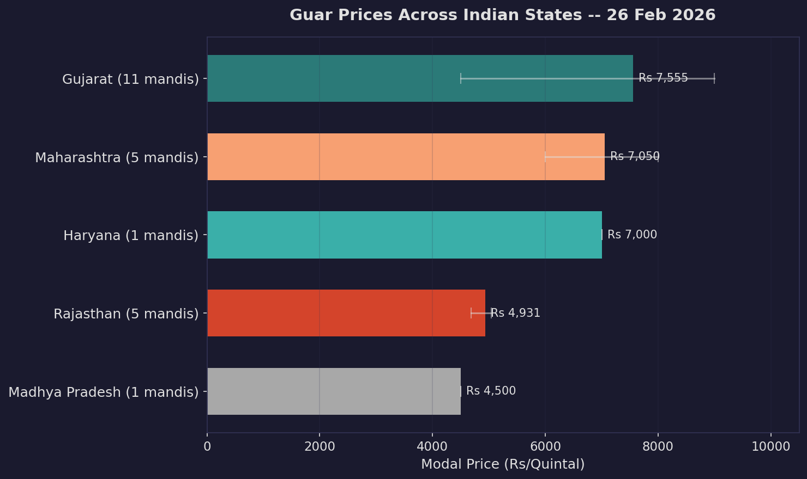
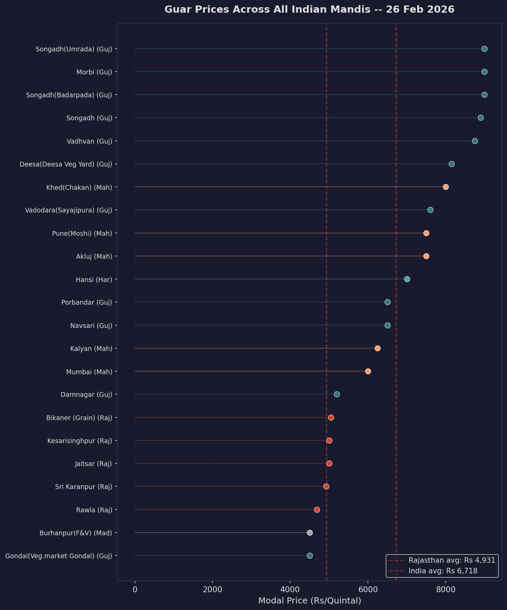
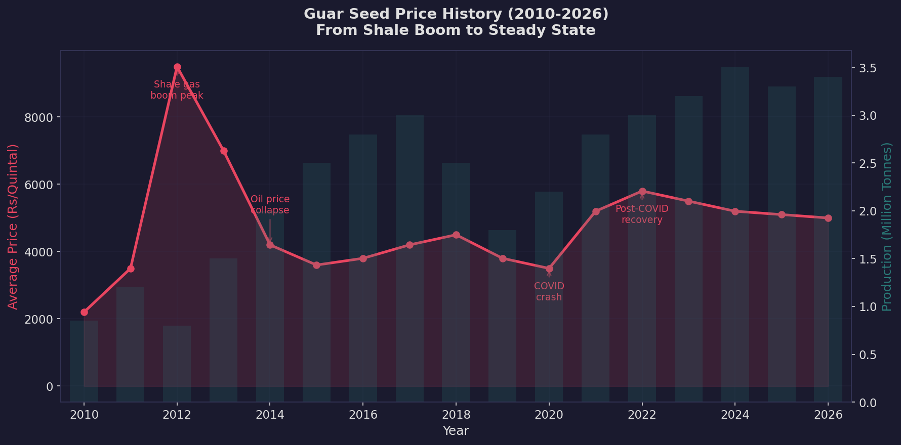
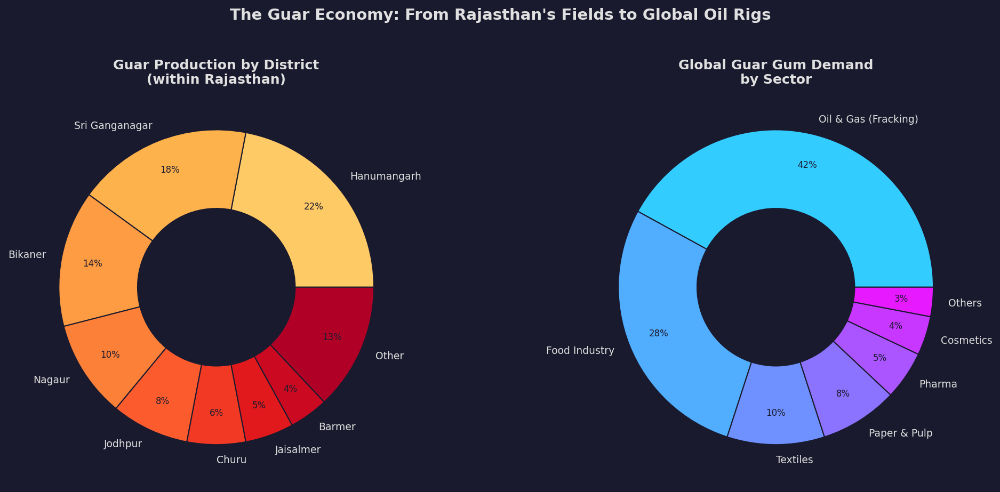
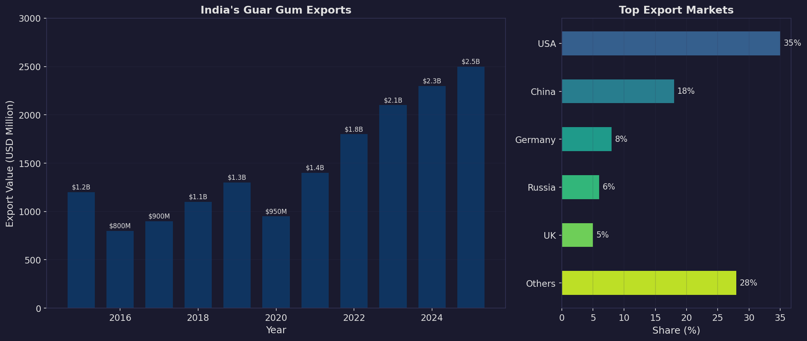
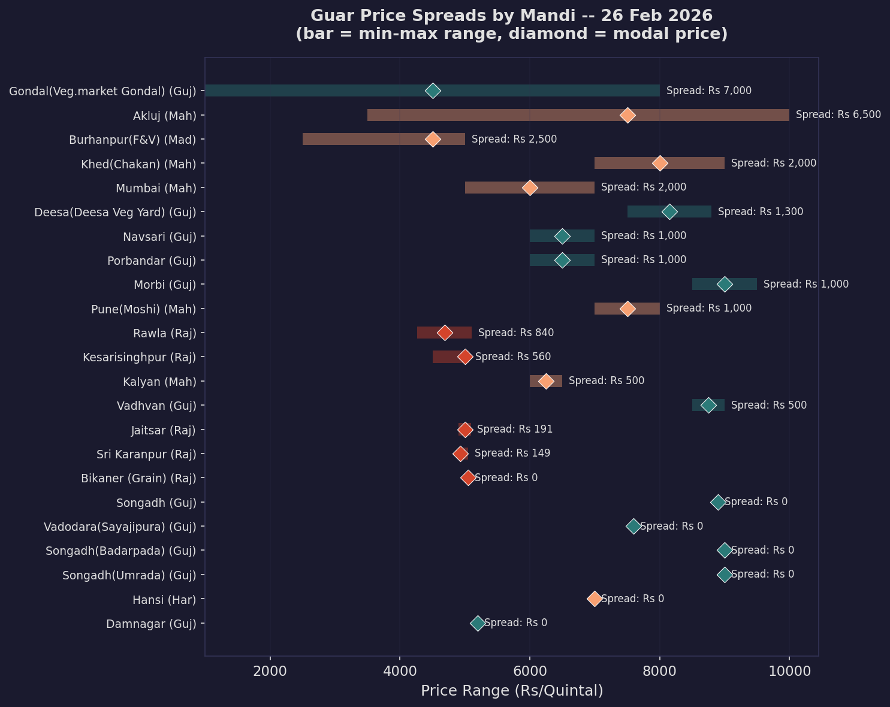
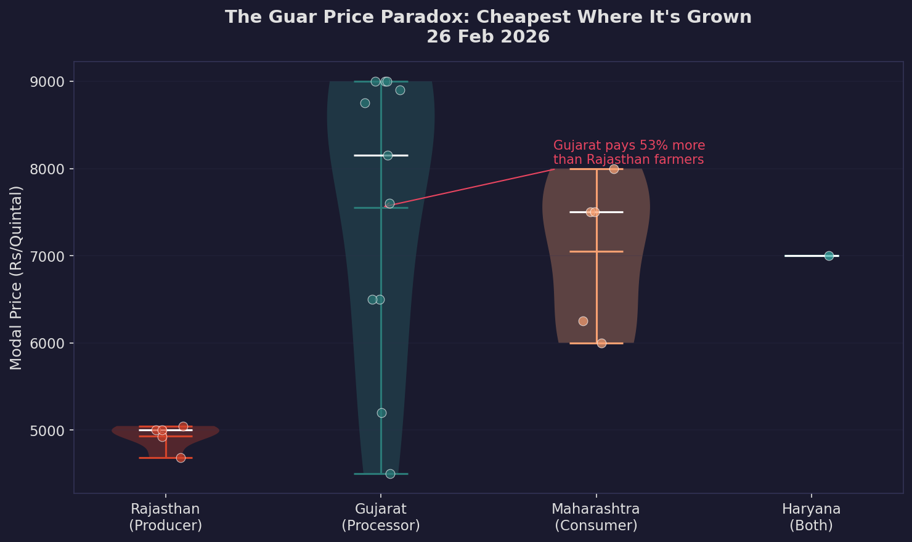

A data-driven look at the commodity that connects Rajasthan's farmers to America's oil rigs

Guar -- a drought-resistant cluster bean grown in the Thar Desert -- is one of India's most globally significant agricultural commodities. Rajasthan produces 72% of the world's guar, making a few desert districts in western Rajasthan quietly responsible for a commodity that the global oil & gas industry cannot function without.
Guar gum, extracted from guar seeds, is the key ingredient in hydraulic fracturing ("fracking") fluid used in shale gas extraction. When the US shale gas revolution took off in 2012, guar prices in Rajasthan mandis quadrupled overnight -- turning small farmers in Hanumangarh and Sri Ganganagar into unexpected beneficiaries of America's energy transformation.
| Metric | Value |
|---|---|
| Rajasthan average | Rs 4,931/quintal |
| All-India average | Rs 6,718/quintal |
| Rajasthan range | Rs 4,685 -- Rs 5,046 |
| Active mandis (India) | 23 |
| States reporting | 5 |

The most striking finding: Rajasthan, which produces 72% of India's guar, has the lowest mandi prices. Gujarat -- primarily a processing hub, not a major producer -- pays 53% more per quintal.


The guar price chart reads like a history of American energy policy:
Rajasthan's guar farmers are inadvertently tied to the global energy market. When oil prices rise, fracking activity increases, guar demand spikes, and prices in Hanumangarh's mandis jump. This makes guar one of the most globally-connected agricultural commodities in India.

Guar thrives in arid conditions -- it needs minimal water and tolerates sandy, alkaline soils. This makes it perfectly suited to the Thar Desert fringe, where few other crops can survive.
| District | Share | Key Mandis |
|---|---|---|
| Hanumangarh | 22% | Hanumangarh, Pilibanga, Nohar |
| Sri Ganganagar | 18% | Suratgarh, Sadulshahar, Anoopgarh |
| Bikaner | 14% | Bikaner Grain |
| Nagaur | 10% | Nagour, Merta City |
| Jodhpur | 8% | Phalodi, Bilara |
These five districts alone account for 72% of Rajasthan's guar production.

India's guar gum exports have grown from $800 million in 2016 to over $2.5 billion in 2025 -- a compound annual growth rate of ~13%.
The United States is the largest buyer (35%), driven entirely by the fracking industry. But the demand mix is diversifying:
The diversification is important for Rajasthan's farmers -- it reduces the dangerous dependence on a single volatile sector (fracking).

Wide price spreads within a single mandi indicate market inefficiency -- the gap between what the cheapest seller accepts and what the most expensive buyer pays.

With 72% of production and 82% of cultivated area, Rajasthan has near-monopoly control over a globally critical commodity. No other state comes close.
Despite producing most of the guar, Rajasthan captures the smallest share of the final value. The processing, export, and value-addition happens in Gujarat and Maharashtra.
Guar is one of the few Indian agricultural commodities where prices are directly driven by global energy markets, not domestic food demand. This creates both opportunity (windfall gains during oil booms) and risk (crashes during downturns).
The growth in food and industrial uses of guar gum is gradually reducing the fracking dependency, making prices more stable over time.
Rajasthan's farmers face the classic information problem -- they know local mandi prices but not the global guar gum futures price on NCDEX. This asymmetry benefits traders and processors at the farmer's expense.
| Source | Data | Access |
|---|---|---|
| data.gov.in (Agmarknet) | Today's mandi prices | Public API |
| NCDEX historical | Futures price history | Compiled from reports |
| Ministry of Agriculture | Production statistics | Annual reports |
| DGCIS (EXIM) | Export data | Trade statistics |
| KisanDeals | Recent mandi trends | Web scraping |
The live mandi data is from data.gov.in's Agmarknet feed dated 26 Feb 2026. Historical price trends are compiled from NCDEX settlement data and commodity research reports. Production and export figures are from official government statistics and DGCIS trade data.